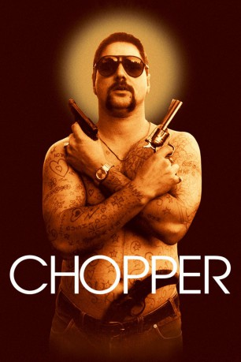
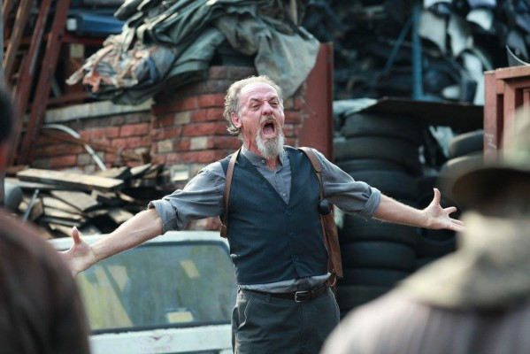

#7422 Chopper
 
 IMDB-Wertung: 7.2 / 10
IMDB-Wertung: 7.2 / 10  Metascore: 0
Metascore: 0 
Mark Chopper Read hat einen Vorsatz: Er will eine Verbrecherlegende werden. Karriereziel: Kult-Gangster! Die Sonnenbrille im coolen Stone-Face, den Körper übersät mit Tattoos, in jeder Hand ’ne Knarre, eine weitere im Hosenbund – so posiert das Arschloch für die Ewigkeit. Ein bulliger Soziopath, berauscht von der eigenen Gefährlichkeit, selbst wenn die mehr Fiktion als Fakt ist. Das Drama beginnt, als Read nach einem Kidnapping-Versuch in den Hochsicherheitstrakt von Melbournes Pentridge Prison verlegt wird, in dem er sich mit den anderen Insassen anlegt, bis sein Freund Jimmy sich nicht mehr anders zu helfen weiß: Er sticht Chopper nieder, um ihn und sich zu retten… Acht Jahre und viele Wunden sp��ter wird Read entlassen. Als lebendiges Waffenarsenal macht er sich auf, die Welt vom “Gesindel” zu befreien, stilisiert sich selbst zum “Exterminator”.
Jahr: 2000
Dauer: 90 Minuten
FSK: 18
Land: Australien Studio: Legend Films InternationalTonspuren: DD5.1 - ,
Untertitel:
Auflösung: SD (712x402) Größe: 1054 MB
Genre: Drama, Krimi, Biographie
Regisseur: Andrew Dominik
Drehbuch: Jeremy Catalino
Soundtrack:
Darsteller:
 Vince Colosimo als Neville Bartos
Vince Colosimo als Neville Bartos Eric Bana als Chopper
Eric Bana als Chopper-  David Field als Keithy George
 Dan Wyllie als Bluey
Dan Wyllie als Bluey- Kate Beahan als Tanya
- Robert Rabiah als Nick
 Bill Young als Detective Downie
Bill Young als Detective Downie- Peter Hardy als Detective Cooney
- Skye Wansey als Mandy
- Renée Brack als Television Interviewer
- Gregory Pitt als Prison Officer #1
- Richard Sutherland als Prison Officer #2
- Simon Lyndon als Jimmy Loughnan
- Gary Waddell als Kevin Darcy
- Andrew Dunn als Prison Officer #3
- Caleb Cluff als Detective Creswell
- Hilton Henderson als Detective Wyatt
- Fred Barker als Gov. Beasley
- Alan Close als Medical Officer
- Carl Price als Brunswick Court Judge
- Mark Stratford als Classification Officer
- Kenny Graham als Keith Read
- Brian Mannix als Ian James
- Johnnie Targhan als Paul - Bouncer
- Sam Houli als Robbo
- Serge Liistro als Sammy the Turk
- Pam Western als Tanya's Mother
- Sarah Jane King als Glamour Queen
- Annalise Emtsis als Shazzy
- Marcus Taylor als Marcus
- Ernie Gray als Crown Prosecutor
 David Ross Paterson als Morris Jeffrey
David Ross Paterson als Morris Jeffrey- Fletcher Humphrys als Bucky
- Terry Willesee als 'Current Affairs Show' Host
- Eve Hannifer als (uncredited
- Jordan Janceski als Disco-Goer , uncredited
- Vikki Thomas als Best Friend of Witness , uncredited
Datei: X:\FSK18-2000-2009\Chopper (2000, FSK18, 712x402).mkv seit 09.11.2017
Festplatte: FSK18
 Es gibt insgesamt 106 Filme in der Gruppe 'FSK18-2000-2009'
Es gibt insgesamt 106 Filme in der Gruppe 'FSK18-2000-2009'